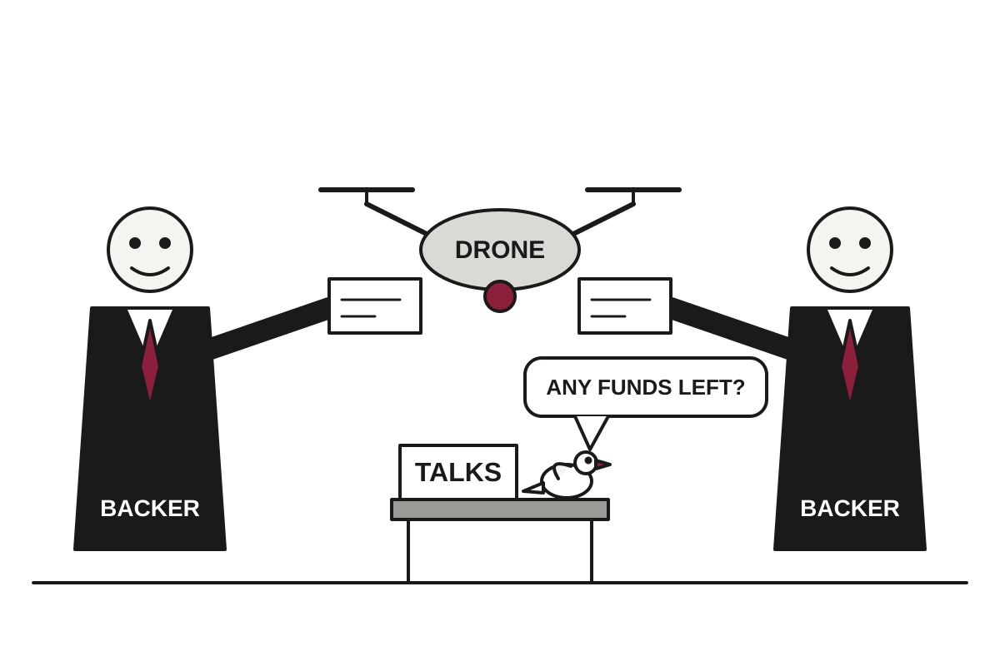

Drone Strike Kills 80 in Sudan as War's Sponsors Keep Writing Checks
A double strike near a market in West Kordofan is one of the war's deadliest, while the UN warns that neither side is moving toward talks.
The wire said: Drone attack near market kills 80 in Sudan · The Guardian

Catch up
Sudan's army and the paramilitary Rapid Support Forces have been at war since April 2023, after a power struggle erupted into fighting in Khartoum. Drones have become the conflict's main killer of civilians.Why it matters
Drone strikes are now responsible for most civilian deaths in Sudan, and with outside backers still supplying the warring sides, there is little sign of a negotiated end. Civilians in markets and transport hubs bear the cost of that stalemate.A drone strike near a market in al-Dibab, in Sudan's West Kordofan state, killed 80 people on Sunday evening, The Guardian reported. Most of the dead were commuters waiting for rides home after market day. It is among the deadliest single strikes since the war began in April 2023.
Witness Ahmed Wadi, speaking over a satellite internet link because of a communications blackout, said the drone struck twice, 10 minutes apart, at a transport hub. He said he helped bury 50 bodies, one of them his brother. A medic who asked not to be named for safety said 30 of 47 people taken to the nearby town of al-Mujlad later died of their injuries, and that a separate strike on al-Mujlad injured four more.
Who fired is, as usual, a matter of competing statements. The RSF-declared administration, known as Tasis, accused the army of carrying out the strike. Translation: the side that controls all of West Kordofan says the other side bombed it. The Guardian's report does not include an army response on this strike.
The pattern is consistent, if not reassuring. Between January and April, drone strikes accounted for at least 880 civilian deaths, more than 80% of all conflict-related civilian deaths in Sudan. On Friday, strikes on a livestock market in Nyala, South Darfur, drew two accounts: the army said it killed RSF fighters, while the RSF said 30 civilians died.
Drones are cheap, can be launched from a distance, and let each side hit areas held by the other without the trouble of capturing them. Markets are where people gather, which is also what makes them attractive to anyone claiming a target was military and unattractive to anyone who has to bury the result.
The UN's Rosemary DiCarlo told the Security Council last week that there is "no breakthrough on the horizon." She said the warring parties seem to believe they can gain more on the battlefield and that continued external support will let them pursue their aims by force. The Guardian notes that foreign powers with vested interests are backing both sides.
That is the underlying mechanism. A war ends when continuing becomes more expensive than stopping, and so long as outside suppliers cover the bill, the incentive to negotiate stays small. The war has already killed hundreds of thousands of people and displaced many more.
What to watch next is whether the Security Council's warnings turn into anything that restricts the flow of weapons and money. So far, the drones have been better supplied than the diplomacy.
Satire based on reporting by The Guardian. Read the originals for the straight version.